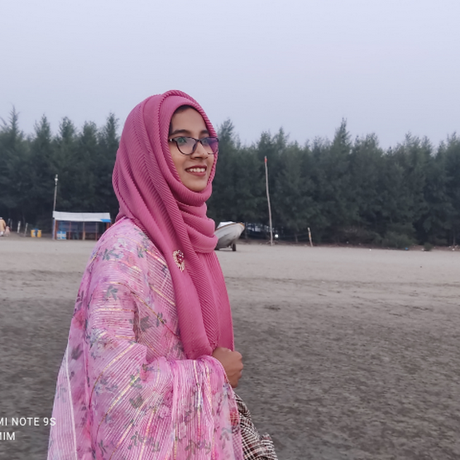
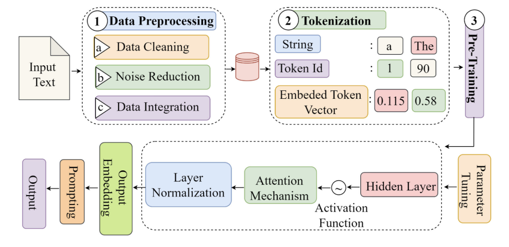
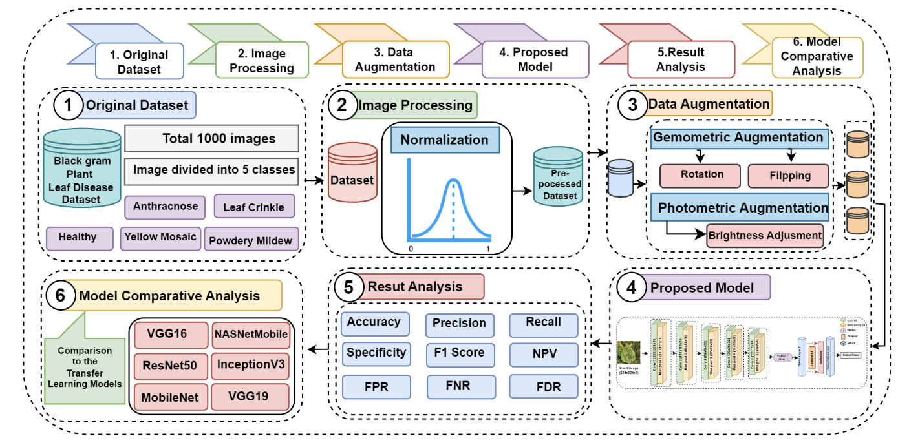
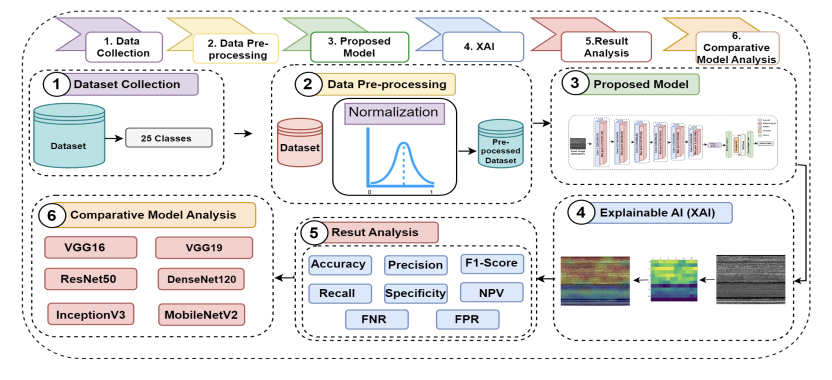

|
Most Marufatul Jannat Mim I am a Computer Science Engineer and I have completed my graduation at Department of Computer Science and Engineering at United International University (UIU) . I am actively involved in research activities related to Computer Vision, Deep Learning, Machine Learning, Explainable Artificial Intelligence, and Medical Image Analysis . I have done my undergraduate thesis under the supervision on Saddam Mukta in computer vision fields and received the 1st Runner Up prize . Currently I am working on computer vision with applications in medical imaging under the supervision of Dr Sami Azam . Besides studies, I have been involved in co-curricular activities as a president of UIU APP Forum . And I have shown strong leadership by organizing various seminars and workshops for computer science students. Email / CV / Google Scholar / LinkedIn / GitHub |
 |
{kind=link}
Education |

|
United International University
Obtained Degree: B.Sc. Engg Subject: Computer Science and Engineering (CSE) CGPA: 3.62/4.00 Major: Data Science |
May 2019 - May 2024 |
Publications
|
|

|
A Review on Large Language Models: Architectures, Applications, Taxonomies, Open Issues and Challenges.
Mohaimenul Azam Khan Raiaan, Md Saddam Hossain Mukta, Kaniz Fatema, Nur Mohammad Fahad, Most Marufatul Jannat Mim, Jubaer Ahmad, Mohammed Eunus Ali, Sami Azam IEEE Access, 2024 [paper] |
|

|
Applying Deep Convolutional Neural Network for Classification of Black Gram Plant Leaf Disease
Most Marufatul Jannat Mim, Ripon Kumar Debnath, Dr. Dewan Md. Farid 26th International Conference on Computer and Information Technology (ICCIT), 2023 [paper] |
Work Experience |
|
Research Engineer
Advanced Intelligent Multidisciplinary Systems Lab - AIMS Lab, UIU, Bangladesh Tasks: |
September 2024 - November 2024 |
|
Instructor
UIU App Forum, United International University(UIU) Courses Conducted: Advanced Object Oriented Programming, Database Management System, System Design, Software Engineering, and Final Year Design Project. |
September 2023 - August 2024 |
|
Grader
Department of CSE, United International University(UIU), Bangladesh Tasks: |
November 2022 - January 2024 |
|
Digital Content Creator
YouTube Tasks: |
February 2022 - Present |
Research Works
|

|
CNN-BASED LUNG TUMOR SEGMENTATION ENHANCED BY EXPLAINABLE AI
Most Marufatul Jannat Mim, Ripon Kumar Debnath, Dr. Riasat Azim In our research paper, we're focusing on finding lung tumors in medical images. We're using a technology called Convolutional Neural Networks (CNNs) to do this job. But we're also making it easier to understand how the computer finds these tumors by using a type of AI called Explainable AI. This makes the process more accurate and helps doctors better understand the results, which can improve patient care. Current state: Ongoing |
|

|
ENHANCING MALWARE DETECTION THROUGH CONVOLUTIONAL NEURAL NETWORKS AND EXPLAINABLE AI
Most Marufatul Jannat Mim, Naznin Akter Nela, Tonny Rani Das, Dr. Mohammad Shahriar Rahman, and Mr. Mir Moynuddin Ahmed Shibly In this research we used Convolutional Neural Networks (CNNs) with Explainable AI techniques like Grad-CAM and LIME to enhance malware detection. By leveraging these methodologies, we aim to improve both the accuracy and interpretability of malware detection systems, contributing to more robust cybersecurity measures. Current state: Submitted in IEEE TENSYMP, 2024 |
Software Project |
|
Bus Shuttle
UIU Bus Shuttle is a Java-based website enabling seamless tracking of university shuttles, displaying their current location and available seat occupancy. Users can book or cancel seats effortlessly,all presented with a user-friendly CSS interface GitHub: https://github.com/Mim12/UIU-Bus-Shuttle |
|
Car Solution
Car Solution is a dynamic website offering a range of automotive services including car wash and car rental, implemented using PHP, CSS, and JavaScript for seamless functionality and user interaction. GitHub: https://github.com/Mim12/Car-Solution-PHP-MYSQL |
|
Job Seekers
Job Seekers serves as a centralized platform, bringing together both job seekers and recruiters, offering a seamless space for employment opportunities, all powered by CSS, PHP, and JavaScript. GitHub: https://github.com/Mim12/Jobseekers--PHP-MYSQL |
Skills |
|
Technical Skils
|
|
Communication Skils
|
Hobbies and Other Interest |
|
|
Awards and Services |
|
Achievements
|
|
Services
|